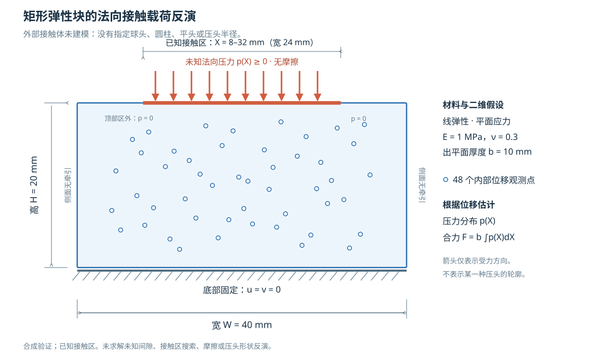

二维 PINN 实验入口
已保存两种 PDE、10 种优化方法的真实训练结果。
打开全部实验直接查看接触力反演请使用此首页或已生成的结果页。dashboard.template.html 是报告生成模板，尚未填入实验数据。
接触实验的几何与边界

本例对矩形弹性块施加未知法向接触压力，再根据稀疏位移观测反演压力和合力。外部接触体的形状与半径未建模，因此本例没有指定球头、圆柱或平头压头。
已保存两种 PDE、10 种优化方法的真实训练结果。
打开全部实验直接查看接触力反演请使用此首页或已生成的结果页。dashboard.template.html 是报告生成模板，尚未填入实验数据。

本例对矩形弹性块施加未知法向接触压力，再根据稀疏位移观测反演压力和合力。外部接触体的形状与半径未建模，因此本例没有指定球头、圆柱或平头压头。